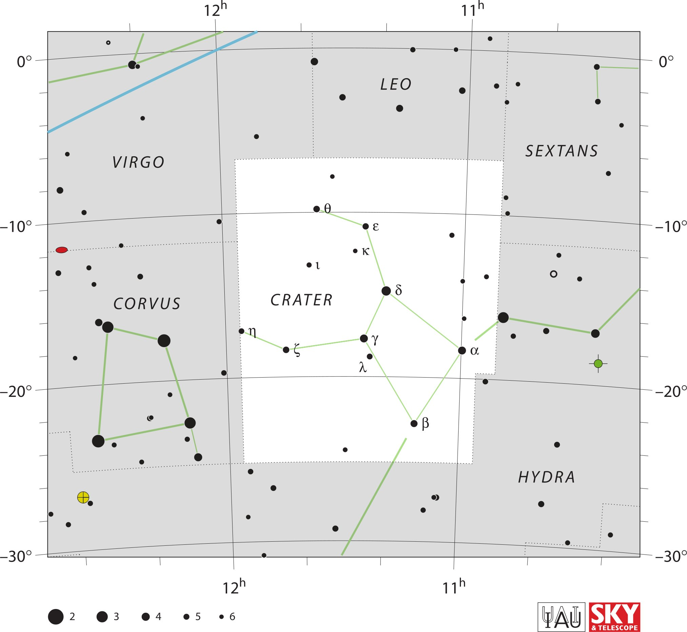

<div data-role="page" id="crater" data-theme="a">

	<div data-role="header">
		<a href="#home" data-icon="back" data-rel="back">Back</a>
		<h1>Crater</h1>
		<a href="#home" data-icon="home">Home</a>
	</div>

	<div data-role="content">

		<div class="cssImageMap">
			

			<a href="virgo.html" class="constellation" data-side="left"
				data-x="310" data-y="440" data-width="250" data-height="70"></a>

			<a href="corvus.html" class="constellation" data-side="left"
				data-x="320" data-y="860" data-width="250" data-height="70"></a>

			<a href="leo.html" class="constellation" data-side="right"
				data-x="1100" data-y="210" data-width="200" data-height="70"></a>

			<a href="sextans.html" class="constellation" data-side="right"
				data-x="1530" data-y="410" data-width="250" data-height="70"></a>

			<a href="hydra.html" class="constellation" data-side="right"
				data-x="1510" data-y="1370" data-width="250" data-height="70"></a>

		</div>

		<div id="here">
			<h2>Crater</h2>

			<p>Image Credit: IAU and Sky & Telescope magazine (Roger Sinnott
				& Rick Fienberg)
		</div>
	</div>
</div>
